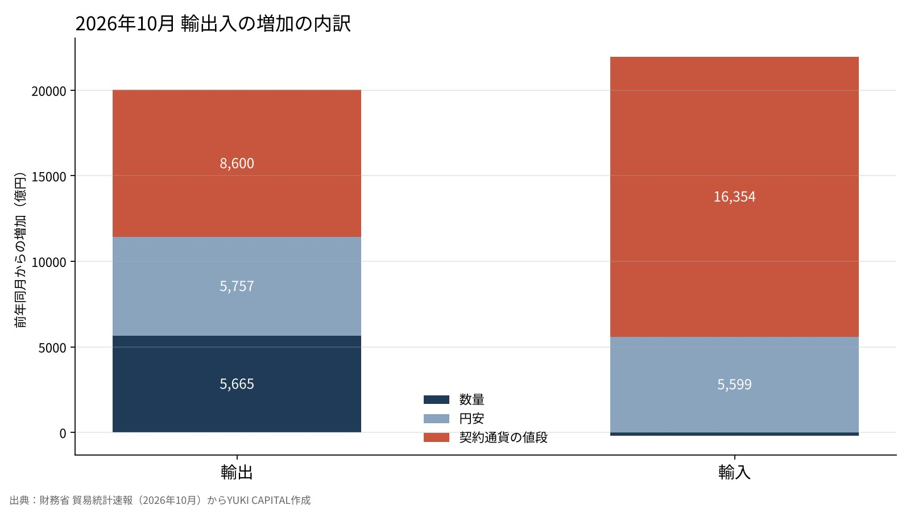
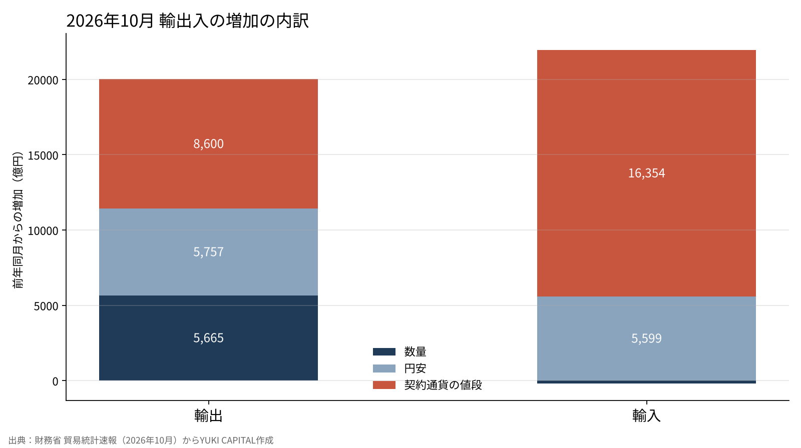
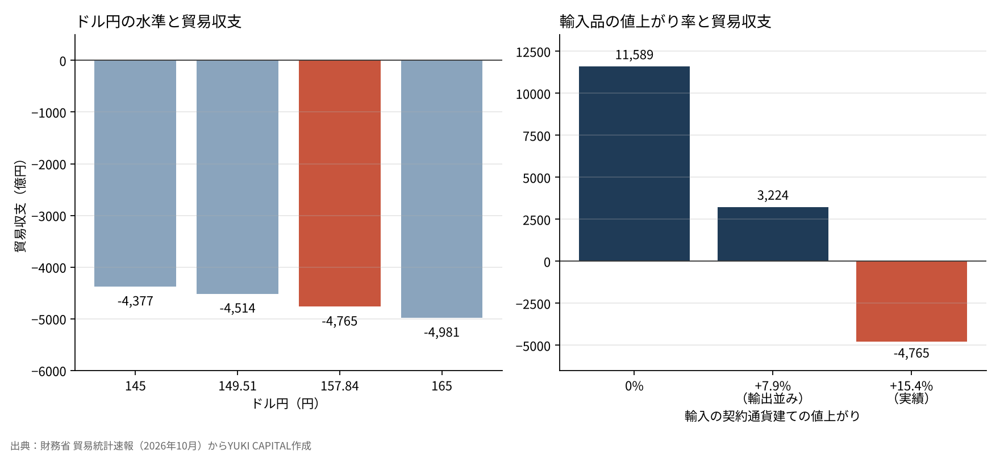

輸出が過去最大でも、なぜ日本の貿易は赤字なのか――財務省の2026年10月の貿易統計を数量・為替・価格に分ける
財務省が11月18日に発表した2026年10月の貿易統計速報で、輸出は11兆7,688億円（前年同月比+20.5%）、輸入は12兆2,453億円（+21.6%）と、どちらも比べられる1979年以降で最大になった。
それでも差し引きは4,765億円の赤字で、前年同月の約3,000億円の赤字より広がった。
本稿の問いは、輸出の伸びのうち「たくさん売れた分」と「円安で金額が膨らんだ分」と「値段が上がった分」はそれぞれいくらで、なぜ輸出が最大でも赤字が広がったのか、である。

- 輸出の増加2兆22億円のうち、数量の増加は約5,665億円（28%）にとどまり、円安が約5,757億円、契約通貨建ての値上がりが約8,600億円だった。
- 輸入は数量がほぼ横ばい（−0.2%）なのに、契約通貨建ての値上がりだけで約1兆6,354億円増え、これが赤字の拡大の主因だった。
- 円安は輸出と輸入を同じ率で膨らませるため、ドル円を145〜165円に動かしても赤字は4,377億〜4,981億円の範囲にとどまる。赤字の大きさを決めているのは為替ではなく輸入品の値段である。
問いと背景
貿易収支とは、モノの輸出額から輸入額を引いた差額である。サービスや投資の収益は含まない。輸出数量指数とは、基準年の値段で測った輸出の量を指数にしたもので、金額から値段の変化を除いた「どれだけ売れたか」を表す[1]。
10月の数字は見出しだけを見ると強い。輸出は半導体等電子部品と半導体等製造装置がともに前年比+49.7%、自動車が+19.9%伸び、米国向けは+23.9%だった[2]。一方で輸入も原粗油が+60.5%、半導体等電子部品が+60.0%と大きく伸びた[2]。
契約通貨建てとは、取引の契約で使われた通貨（多くはドル）で測った値段のことである。円建ての値段は、契約通貨建ての値段に為替の変化を掛けたものになる。この区別が、本稿の分解の中心になる。
輸出が最大なのに赤字が広がるのは直感に反する。この食い違いを解くには、金額の伸びを「量」「為替」「値段」の3つに分けて見る必要がある。
データと方法
使うのは財務省の貿易統計速報の4つの数字である[1][2]。輸出と輸入の金額と前年比、輸出数量指数（114.4、前年比+5.8%）と輸入数量指数（106.4、−0.2%）、そして集計に使われた為替レート（1ドル157.84円、前年同月149.51円）である[2]。
方法は次の通りである。金額の伸び率を（1＋数量の伸び）×（1＋円建ての値段の伸び）に分ける。円建ての値段の伸びは、さらに（1＋円安の率）×（1＋契約通貨建ての値段の伸び）に分ける。円安の率は157.84÷149.51−1＝5.57%である。
この式から、輸出の円建ての値段は+13.9%、契約通貨建てでは+7.9%と推定できる。輸入は円建てで+21.8%、契約通貨建てで+15.4%である。前年同月の金額は今年の金額を前年比で割り戻して求め、増えた金額を3つの要因に配った。
例えば輸出では、前年同月の約9兆7,666億円に数量の伸び5.8%を掛けた約5,665億円を「量」の寄与とした。次に、量が増えた後の金額に円安の率5.57%を掛けた約5,757億円を「円安」の寄与とし、残りの約8,600億円を「契約通貨建ての値段」の寄与とした。掛ける順番を入れ替えると配分は少し動くが、結論は変わらない。
結果
輸出は前年同月の約9兆7,666億円から2兆22億円増えた。その内訳を下の表にまとめた。
| 前年同月 | 2026年10月 | 増加 | 数量 | 円安 | 契約通貨の値段 | |
|---|---|---|---|---|---|---|
| 輸出 | 9兆7,666億円 | 11兆7,688億円 | 2兆22億円 | 5,665億円 | 5,757億円 | 8,600億円 |
| 輸入 | 10兆701億円 | 12兆2,453億円 | 2兆1,752億円 | −201億円 | 5,599億円 | 1兆6,354億円 |

輸出の伸びのうち、たくさん売れた分は約3割にとどまる。残りの7割は円安と値上がりによる金額の膨らみである。輸入は量が減ったのに金額が2兆円以上増え、その4分の3が契約通貨建ての値上がりだった。
輸出と輸入を並べると、量の寄与は輸出が+5,665億円、輸入が−201億円で、量だけなら貿易収支は約5,866億円改善した計算になる。円安の寄与は輸出+5,757億円、輸入+5,599億円でほぼ打ち消し合った。収支を悪くしたのは、輸入の値上がり1兆6,354億円が輸出の値上がり8,600億円を約7,754億円上回ったことである。
地域別に見ると、赤字の場所ははっきりしている。米国とは輸出2兆1,739億円・輸入1兆4,834億円で約6,905億円の黒字、アジア全体でも約1,883億円の黒字だった[2]。一方、中国とは輸出1兆9,373億円・輸入2兆8,426億円で約9,053億円の赤字、EUとも約1,136億円の赤字である[2]。
| 地域 | 輸出 | 輸入 | 差し引き |
|---|---|---|---|
| 米国 | 2兆1,739億円 | 1兆4,834億円 | +6,905億円 |
| アジア | 6兆4,105億円 | 6兆2,222億円 | +1,883億円 |
| 中国 | 1兆9,373億円 | 2兆8,426億円 | −9,053億円 |
| EU | 1兆1,078億円 | 1兆2,214億円 | −1,136億円 |
中国向けの輸出は全体では+13.3%伸びたが、自動車は−53.3%と半分以下になった[2]。逆に半導体製造装置は+42.6%伸びており、中国向けは「完成品が減り、作る道具が増える」形になっている[2]。
季節の影響を除いた季節調整値で見ると、10月の差し引きは7,672億円の赤字で、原数値の4,765億円より大きい[2]。輸出は前月比+3.3%、輸入は+3.5%で、勢いの面でも輸入が上回っている[2]。
品目で見ると、輸入の値上がりの中心は原粗油（+60.5%）と半導体等電子部品（+60.0%）、電算機類（+52.7%）である[2]。原油はドル建てで買うため、ドル建ての原油価格の上昇がそのまま輸入額を押し上げる。
感度分析
結論が前提にどれだけ左右されるかを、2つの軸で確かめた。1つ目は為替である。輸出と輸入の数量と契約通貨建ての値段を10月のまま置き、ドル円だけを145円・149.51円・157.84円・165円に動かした。

結果、赤字は145円で4,377億円、149.51円で4,514億円、165円で4,981億円になった。円安は輸出と輸入の両方を同じ率で膨らませるため、赤字の大きさはほとんど変わらない。
2つ目は輸入品の値段である。為替と数量を10月のまま置き、輸入の契約通貨建ての値上がりを0%・+7.9%（輸出と同じ）・+15.4%（実績）に動かした。0%なら1兆1,589億円の黒字、輸出と同じ+7.9%なら3,224億円の黒字になり、実績の+15.4%で初めて4,765億円の赤字になる。赤字を決めているのは為替ではなく、輸入品の値段の伸びだと分かる。
均衡する点も求められる。為替と数量を10月のまま置くと、輸入の契約通貨建ての値上がりが+15.4%から約+10.9%まで縮めば、差し引きはほぼゼロになる。
考察
反対の見方もある。円安が続けば日本の輸出企業は値段を下げずに売れ、数量も増えるはずだという見方である。実際に輸出数量は+5.8%伸びており、円安が量を押し上げた面は否定できない[2]。
ただし、この1か月の数量の伸びには、米国向け自動車の+37.2%のような特定の品目の動きが大きく効いている[2]。中国向けの自動車は−53.3%で、地域によって量の動きは逆になっている[2]。1か月の数字で円安の効果を結論づけることはできない。
本稿の限界は3つある。1つ目は速報値であること。確報で数字は動く。2つ目は、金額の分解を全体の指数で行っており、品目ごとの値段の変化を足し上げたものではないこと。3つ目は、前年同月の赤字を前年比から割り戻すと約3,035億円になり、公表値の約3,019億円とわずかにずれることである。
もう1つの見方として、赤字はモノの話にすぎず、日本全体の稼ぎはむしろ増えているという指摘もある。日本は海外への投資から得る所得が大きく、経常収支では黒字が続いてきた[4]。貿易の赤字をそのまま「日本が貧しくなった」と読むのは早い。
答え合わせの基準は、日銀の輸出入物価指数の契約通貨建ての伸びが、本稿の推定（輸出+7.9%、輸入+15.4%）に近いかどうかである[3]。大きく外れていれば、分解の結論は見直しが要る。
結論
2026年10月の輸出が過去最大になったのは、量が伸びたからというより、円安と値上がりで金額が膨らんだからである。輸入は量が横ばいでも、ドル建ての値上がりで金額が大きく増えた。
赤字の大きさを決めたのは為替の水準ではなく、輸入品の値段の伸びだった。ドル円を20円動かしても赤字の幅は約600億円しか変わらないが、輸入品の値上がりを輸出並みに抑えれば黒字に戻る。
貿易の数字を見るときは、金額の前年比だけで強い・弱いを判断せず、数量指数と為替を並べて見る必要がある。量の伸びが金額の伸びの3割にとどまる月の輸出は、「強い」というより「高い」のである。
僕はこう見ている
僕は、円安は外国株を持つ側の自分には影響が小さく、実業の仕入れにもほとんど効いていないと感じている。だから為替の水準で配分を動かさず、ドルのままの預り金も円に替えない。
今回の分解で、貿易の赤字を決めているのは為替より輸入品の値段だと確かめられた。僕が見るのは、日米の金利差とドル円の2つに加えて、原油のようなドル建ての値段の向きである。
参考文献
- 財務省「貿易統計 用語の解説・指数の作成方法」 https://www.customs.go.jp/toukei/info/index.htm
- 財務省「令和8年10月分貿易統計（速報）の概要」2026年11月18日（数字は london3「2026年10月の貿易統計」の転記で確認） https://london3.jp/2026/11/202610boueki/
- 日本銀行「企業物価指数（輸出・輸入物価指数）」 https://www.boj.or.jp/statistics/pi/cgpi_release/index.htm
- 財務省「国際収支状況」 https://www.mof.go.jp/policy/international_policy/reference/balance_of_payments/
- 財務省・税関「外国為替相場（税関長公示レート）」 https://www.customs.go.jp/tetsuzuki/kawase/index.htm
- ロイター（Yahoo!ニュース）「貿易収支、10月は4,765億円の赤字 市場予想下回る赤字幅」2026年11月18日 https://news.yahoo.co.jp/articles/bce70a665771f50437cb9a6c9cc83d43eb506e48
図・イラストはYUKI CAPITALが作成
日々の数字と判断は、Xで記録している。